| sheet | chain | state | observation | empft | emppt |
|---|---|---|---|---|---|
| 46 | bk | Pennsylvania | February 1992 | 30.0 | 15.0 |
| 49 | kfc | Pennsylvania | February 1992 | 6.5 | 6.5 |
| 506 | kfc | Pennsylvania | February 1992 | 3.0 | 7.0 |
| 56 | wendys | Pennsylvania | February 1992 | 20.0 | 20.0 |
| 61 | wendys | Pennsylvania | February 1992 | 6.0 | 26.0 |
Econometria III
Efeitos Aleatórios e Diferenças-em-Diferenças
Rafael Bressan
Estimador Efeitos Aleatórios
Começamos com nosso modelo canônico de painel com heterogeneidade não observada \[y_{it}=\beta_0+\beta_1 x_{it}+\alpha_i+u_{it}\]
Quando \(cov(\alpha_i, x_{it})\neq 0\), devemos utilizar EF ou PD
Se \(cov(\alpha_i, x_{it}) = 0\), então MQO não é viesado
Por que utilizar EA?
Estimador Efeitos Aleatórios
\(y_{it}=\beta_0+\beta_1 x_{it}+\alpha_i+u_{it}\)
- Vejamos o que ocorre com a correlação serial do erro composto \(v_{it}=\alpha_i+u_{it}\)
\[cov(v_{it}, v_{is})=cov(\alpha_i+u_{it}, \alpha_i+u_{is})=\sigma_\alpha^2\implies corr(v_{it}, v_{is})=\sigma_\alpha^2 / (\sigma_\alpha^2 + \sigma_u^2)\]
Heterogeneidade não observada, mesmo quando não relacionada com o regressor \(x\), induz correlação serial no termo de erro!
MQO deixa de ser BLUE 😡
Estimador de EA será Mínimos Quadrados Generalizados (MQG) para corrigir esta correlação serial
Estimador Efeitos Aleatórios
Como funciona?
\(\bar y_{i}=T^{-1}\sum_{t}y_{it}\)
Faremos uma centralização parcial na média intragrupo
\(y_{it}-\lambda \bar{y}_{i}=\beta_0(1-\lambda)+\beta_1 (x_{it}-\lambda \bar{x}_i)+v_{it}-\lambda\bar{v}_i\)
Por enquanto não sabemos o melhor valor para \(0\leq\lambda\leq 1\)
\(\lambda\rightarrow 0 \implies \hat\beta_1^{EA}\rightarrow\hat\beta_1^{MQO}\) e \(\lambda\rightarrow 1 \implies \hat\beta_1^{EA}\rightarrow\hat\beta_1^{EF}\)
Se a hipótese de EA for válida, \(cov(x_{it}, \alpha_i) = 0\), então
- \(\hat\beta_1^{EA}\rightarrow \beta_1\)
Estimador Efeitos Aleatórios
Melhor valor de \(\lambda\)
- O valor do ponderador \(\lambda\) que eliminará a correlação serial em \(v_{it}-\lambda\bar v_i\) será:
\[\lambda=1-\left[\frac{\sigma_u^2}{\sigma_u^2+T\sigma_\alpha^2}\right]^{1/2}\]
Na prática não conhecemos \(\lambda\), pois, não observamos as variâncias diretamente
A solução é utilizar um estimador de Mínimos Quadrados Generalizados Factíveis (MQGF)
\[\hat\lambda=1-\left[\frac{\hat\sigma_u^2}{\hat\sigma_u^2+T\hat\sigma_\alpha^2}\right]^{1/2}\]
Estimador Efeitos Aleatórios
MQGF
MQO também é não viesado. Usado para estimar \(\hat{v}_{it}\) e \(\hat\sigma_v^2\)
\(\hat\sigma_\alpha^2\) é estimado pela covariância entre \(\hat{v}_{it}\) e \(\hat{v}_{is}\), com \(t\neq s\) \[\hat\sigma_\alpha^2=\frac{1}{NT(T-1)/2 - 2}\sum_{i=1}^N\sum_{t=1}^{T-1}\sum_{s=t+1}^T\hat{v}_{it}\hat{v}_{is}\]
E \(\hat\sigma_u^2\) é estimado pela diferença \[\hat\sigma_u^2=\hat\sigma_v^2 - \hat\sigma_\alpha^2\]
Estimador Efeitos Aleatórios
Limitações
Principal hipótese de EA é \(cov(x_{it}, \alpha_i) = 0\)
Hipótese muito restritiva. Equivalente a MQO.
Deve ser encarada como exceção e não regra
Usa-se painel geralmente para explorar heterogeneidade não observada que está correlacionada com os regressores
Somente usado se podemos plausivelmente presumir que \(cov(x_{it}, \alpha_i) = 0\). Caso contrário, EF é preferível
Estimador Efeitos Aleatórios
EA ou EF?
O principal ponto a ser considerado em escolher um modelo de Efeito Fixo ou Efeito Aleatório é a plausibilidade da hipótese \(cov(x_{it}, \alpha_i) = 0\)
Quando a hipótese é verdadeira, ambos os estimadores são consistentes
Se \(cov(x_{it}, \alpha_i) \neq 0\), então apenas EF é consistente
Ideia de Hausman: testamos \(cov(x_{it}, \alpha_i) = 0\) indiretamente ao testarmos \(\hat\beta_1^{EA}-\hat\beta_1^{EF}=0\)
Uma rejeição da \(H_0\) \((\text{i.e. }\hat\beta_1^{EA}\neq\hat\beta_1^{EF})\) implica na escolha do modelo de EF
Diferenças-em-diferenças
Explora mudanças ao longo do tempo que não afetam a todos
Necessidade de encontrar (ou construir) grupo de controle apropriado
Suposição chave: tendências paralelas
Aplicação empírica: impacto do salário mínimo no emprego. Card e Krueger (1994)
Design de inferência causal mais amplamente utilizado em econometria aplicada

Métodos de avaliação
A regressão múltipla geralmente não fornece estimativas causais por causa da seleção em não observáveis (e.g. viés de variável omitida).
Experimentos RCTs são uma maneira de resolver este problema, mas muitas vezes são impossíveis de fazer.
Quatro principais métodos de avaliação causal usados em economia:
- variáveis instrumentais (VI),
- pareamento por escore de propensão (Propensity Score Matching),
- regressão em descontinuidade (RDD)
- diferenças-em-diferenças (DID), e
- bunching chegou atrasado 🕰️
Esses métodos são usados para identificar relações causais entre tratamentos e resultados.
Diferenças em Diferenças (DID)
⚠️ indivíduos não são alocados aleatoriamente ao tratamento
Requisitos do DID canônico:
- 2 períodos de tempo: antes e depois do tratamento.
- 2 grupos:
- grupo controle: nunca recebe tratamento,
- grupo de tratamento: inicialmente não tratado e depois totalmente tratado.
Sob certas suposições, o grupo de controle pode ser usado como contrafactual para o grupo de tratamento
Diferenças em Diferenças (DID)
Exemplo: Salário Mínimo e Emprego
Imagine que você está interessado em avaliar o impacto causal do aumento do salário mínimo no (des)emprego.
Por que isso não é tão simples? Qual deve ser o grupo de controle?
Paper seminal em 1994 pelos proeminentes economistas trabalhistas David Card e Alan Krueger intitulado “Minimum Wages and Employment: A Case Study of the Fast-Food Industry in New Jersey and Pennsylvania”
Estima o efeito de um aumento do salário mínimo sobre a taxa de emprego na indústria de fast-food. Por que essa indústria?
Card e Krueger (1994)
Detalhes Institucionais
Nos EUA, existe um salário mínimo nacional, mas os estados podem divergir dele.
1º de abril de 1992: o salário mínimo de Nova Jersey aumenta de US$ 4,25 para US$ 5,05 por hora.
A vizinha Pensilvânia não mudou seu nível de salário mínimo.

- Pensilvânia e Nova Jersey são muito semelhantes: instituições semelhantes, hábitos semelhantes, consumidores semelhantes, renda semelhante, clima semelhante, etc.
Card e Krueger (1994)
Metodologia
Pesquisados 410 estabelecimentos de fast-food em Nova Jersey (NJ) e leste da Pensilvânia
Tempo:
Levantamento antes do aumento de SM de NJ: fevereiro/março de 1992
Levantamento após aumento de SM de NJ: Nov/Dez 1992
Que comparações você acha que eles fizeram ❓
Vamos dar uma olhada nos dados
Card e Krueger (1994)
Resultados
Emprego médio por loja antes e depois do aumento do salário mínimo de NJ
| Variáveis | Pensilvania | Nova Jersey |
|---|---|---|
| emprego FTE antes | 23.33 | 20.44 |
| emprego FTE depois | 21.17 | 21.03 |
| Mudança na média emprego FTE | -2.17 | 0.59 |
Estimativa de DID
Estimativa causal de diferenças em diferenças: \(0,59 - (-2,17) = 2,76\)
Interpretação: o aumento do salário mínimo levou a um aumento no emprego FTE por loja de 2,76 em média.
Sim, a essência das diferenças-em-diferenças é assim simples! 😀
Vejamos esses resultados graficamente.
DID graficamente
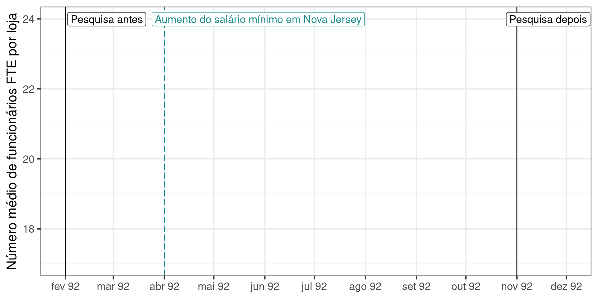DID graficamente

DID graficamente
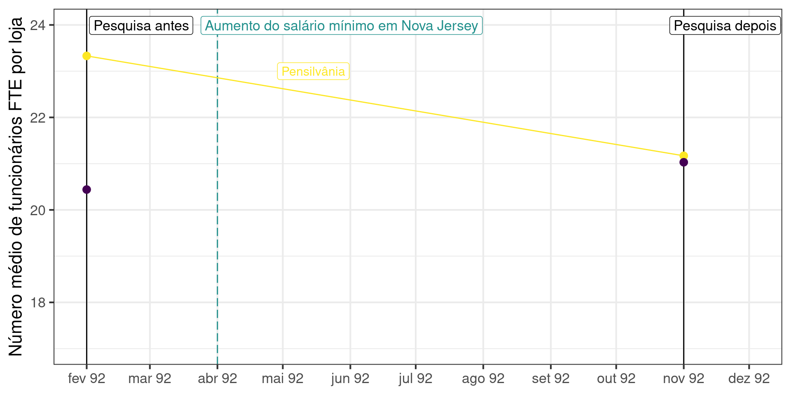DID graficamente
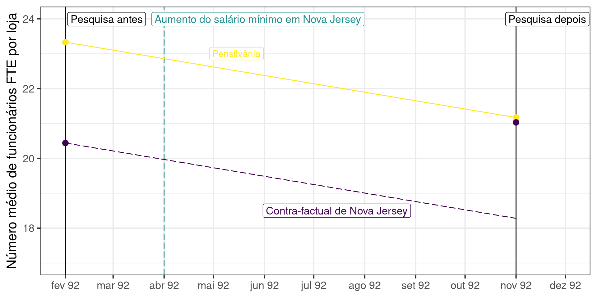DID graficamente
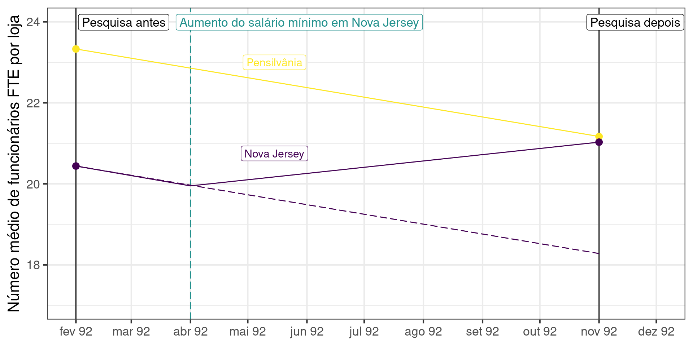DID graficamente
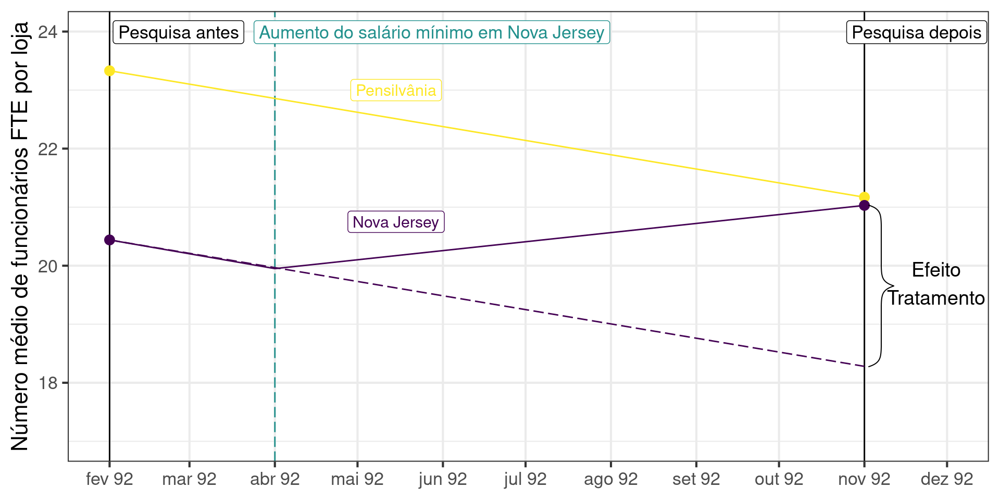Comparação ingênua depois/antes?

Estimação
DID em Forma de Regressão
Na prática, o DID é geralmente estimado em mais de 2 períodos (4 observações)
Há mais pontos de dados antes e depois da alteração da política
3 ingredientes:
Variável dummy de tratamento: \(TREAT_s\) onde o subscrito \(s\) nos lembra que o tratamento está no nível do estado
Variável dummy dos períodos de pós-tratamento: \(POST_t\) onde o subscrito \(t\) nos lembra que esta variável varia ao longo do tempo
Termo de interação entre os dois: \(TREAT_s \times POST_t\) 👉 o coeficiente neste termo é o efeito causal DID!
DID em Forma de Regressão
Variável dummy de tratamento \[ TREAT_s = \begin{cases}\begin{array}{lcl} 0 \quad \text{se } s = \text{Pensilvânia} \\\ 1 \quad \text{se } s = \text{Nova Jersey} \end{array}\end{cases} \]
Variável dummy pós-tratamento \[ POST_t = \begin{cases}\begin{array}{lcl} 0 \quad \text{se } t < \text{1º abril, 1992} \\\ 1 \quad \text{se } t \geq \text{1º abril, 1992} \end{array}\end{cases} \]
Quais observações correspondem a \(TREAT_s \times POST_t = 1\)?
- Vamos juntar todos esses ingredientes: \[EMP_{st} = \alpha + \beta TREAT_s + \gamma POST_t + \delta(TREAT_s \times POST_t) + \varepsilon_{st}\]
Compreendendo a Regressão
\[EMP_{st} = \color{#d96502}\alpha + \color{#027D83}\beta TREAT_s + \color{#02AB0D}\gamma POST_t + \color{#d90502}\delta(TREAT_s \times POST_t) + \varepsilon_{st}\]
Temos o seguinte:
\(\mathbb{E}(EMP_{st} \; | \; TREAT_s = 0, POST_t = 0) = \color{#d96502}\alpha \tag{1}\)
\(\mathbb{E}(EMP_{st} \; | \; TREAT_s = 0, POST_t = 1) = \color{#d96502}\alpha + \color{#02AB0D}\gamma\tag{2}\)
\(\mathbb{E}(EMP_{st} \; | \; TREAT_s = 1, POST_t = 0) = \color{#d96502}\alpha + \color{#027D83}\beta\tag{3}\)
\(\mathbb{E}(EMP_{st} \; | \; TREAT_s = 1, POST_t = 1) = \color{#d96502}\alpha + \color{#027D83}\beta + \color{#02AB0D}\gamma + \color{#d90502}\delta\tag{4}\)
\[\left[(4)-(3)\right]-\left[(2)-(1)\right] = \color{#d90502}\delta\]
\(\color{#d90502}\delta\): efeito causal do aumento do salário mínimo sobre o emprego
Compreendendo a Regressão
\[EMP_{st} = \color{#d96502}\alpha + \color{#027D83}\beta TREAT_s + \color{#02AB0D}\gamma POST_t + \color{#d90502}\delta(TREAT_s \times POST_t) + \varepsilon_{st}\]
Em formato de tabela:
| Pré | Pós | \(\Delta\)(Pós - Pré) | |
|---|---|---|---|
| Pensilvânia (PA) | \(\color{#d96502}\alpha\) | \(\color{#d96502}\alpha + \color{#02AB0D}\gamma\) | \(\color{#02AB0D}\gamma\) |
| Nova Jersey (NJ) | \(\color{#d96502}\alpha + \color{#027D83}\beta\) | \(\color{#d96502}\alpha + \color{#027D83}\beta + \color{#02AB0D}\gamma + \color{#d90502}\delta\) | \(\color{#02AB0D}\gamma + \color{#d90502}\delta\) |
| \(\Delta\)(NJ - PA) | \(\color{#027D83}\beta\) | \(\color{#027D83}\beta + \color{#d90502}\delta\) | \(\color{#d90502}\delta\) |
- Esta tabela generaliza para outras configurações substituindo Pensilvânia por Controle e Nova Jersey por Tratamento
Hipótese de Identificação
Hipótese Crucial DID
Tendências Paralelas
Hipótese de tendências comuns ou paralelas: sem qualquer aumento do salário mínimo, a tendência de emprego de fast-food na Pensilvânia teria sido o que deveríamos esperar ver em Nova Jersey.
Esta hipótese afirma que a tendência de emprego de fast-food da Pensilvânia entre fevereiro e novembro de 1992 fornece uma tendência confiável de emprego contrafactual que a indústria de fast-food de Nova Jersey teria experimentado caso não tivesse aumentado seu salário mínimo.
Impossível validar ou invalidar completamente esta hipótese (não-testável).
Verificação intuitiva: comparar tendências antes da mudança de política e boa argumentação da comparabilidade dos grupos
Tendências Paralelas: Graficamente
Verificando a hipótese de tendências paralelas
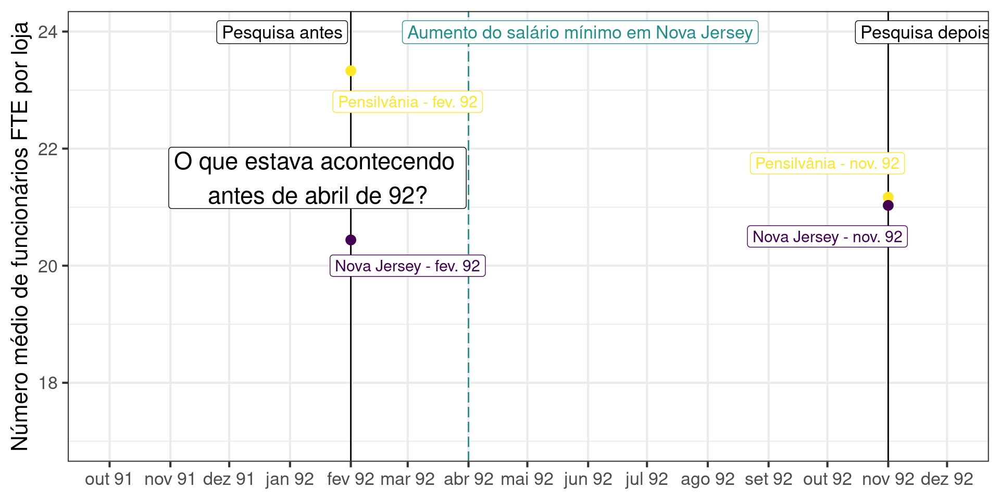Verificando a hipótese de tendências paralelas
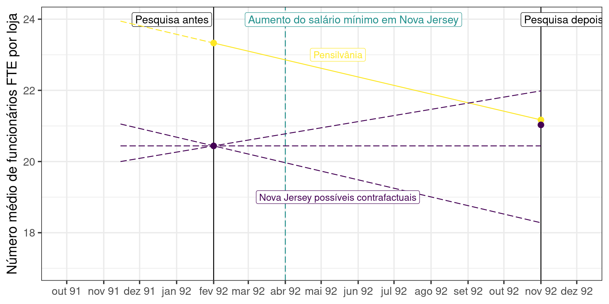Hipótese de tendências paralelas \(\rightarrow\) Verificada ✅
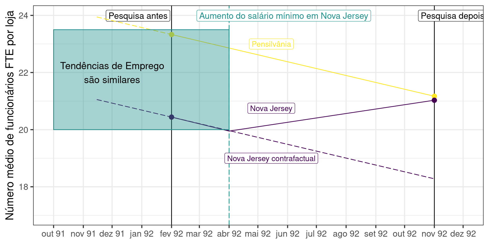Hipótese de tendências paralelas \(\rightarrow\) Verificada ✅
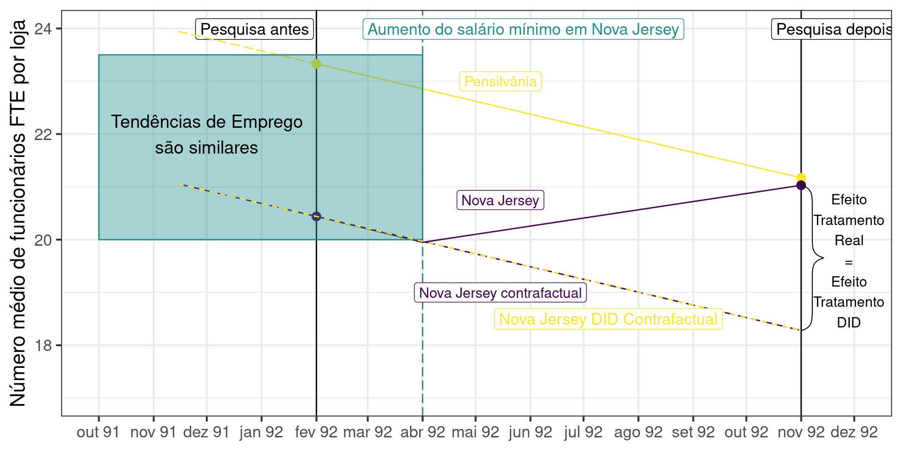Hipótese de tendências paralelas \(\rightarrow\) Não verificada ❌
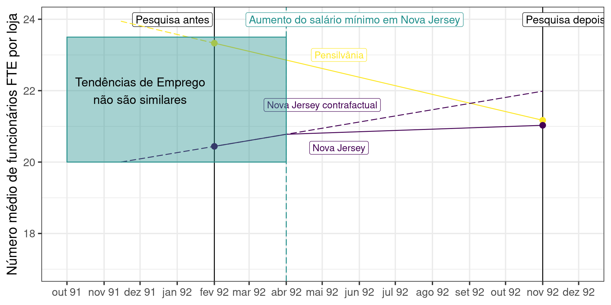Hipótese de tendências paralelas \(\rightarrow\) Não verificada ❌
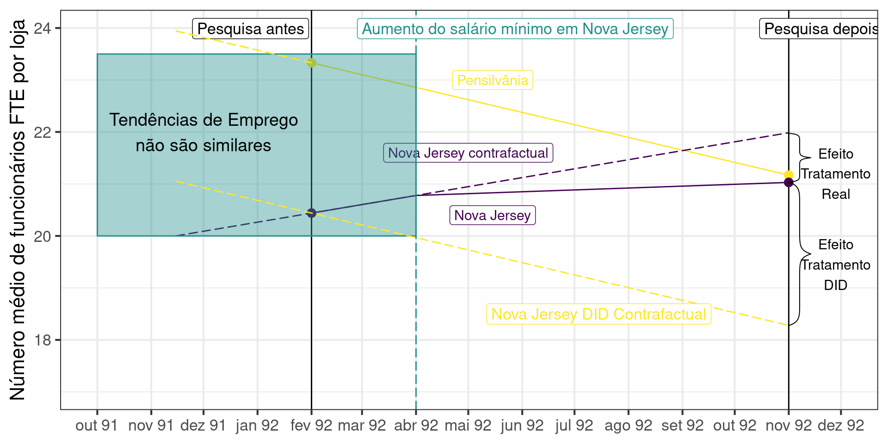Hipótese de Tendências Paralelas: Card and Krueger (2000)
Aqui estão as tendências reais para a Pensilvânia e Nova Jersey

- É provável que a hipótese de tendências parelelas seja verificada ❓
Hipótese de Tendências Paralelas: formalmente
\(Y_{ist}^1\): emprego no restaurante \(i\) no estado \(s\) no momento \(t\) quando SM estadual alto (resultado potencial tratado);
\(Y_{ist}^0\): emprego no restaurante \(i\) no estado \(s\) no momento \(t\) quando SM baixo no estado (resultado potencial não tratado);
O principal pressuposto subjacente à estimativa de DID é que, no estado sem tratamento, o resultado do restaurante \(i\) no estado \(s\) no momento \(t\) é dado por: \[\mathbb{E}[Y_{ist}^0|s,t] = \gamma_s + \lambda_t\]
Duas suposições implícitas:
Viés de seleção: refere-se a características de estado fixo \((\gamma)\)
Tendência temporal: mesma tendência temporal para grupos tratamento e controle \((\lambda)\)
Hipótese de Tendências Paralelas: formalmente
Resultados no grupo de comparação (controle): \[\mathbb{E}[Y_{ist}| s = \text{Pensilvânia},t = \text{Fev}] = \gamma_{PA} + \lambda_{Fev}\]
\[\mathbb{E}[Y_{ist}|s = \text{Pensilvânia},t = \text{Nov}] = \gamma_{PA} + \lambda_{Nov}\]
\[ \begin{align} \mathbb{E}[Y_{ist}|s &= \text{Pensilvânia},t = \text{Nov}] - \mathbb{E}[Y_{ist}| s = \text{Pensilvânia},t = \text{Fev}] \\ &= \gamma_{PA} + \lambda_{Nov} - (\gamma_{PA} + \lambda_{Fev}) \\ &= \underbrace{\lambda_{Nov} - \lambda_{Fev}}_{\text{tendência temporal}} \end{align} \]
- ➡️ o grupo de controle permite estimar a tendência temporal.
Hipótese de Tendências Paralelas: formalmente
Seja \(\delta\) o verdadeiro impacto do aumento do salário mínimo:
\[\mathbb{E}[Y_{ist}^1 - Y_{ist}^0|s=\text{Nova Jersey},t=\text{Nov}] := \delta\]
- Efeito causal médio do tratamento nos tratados (ATT)
Resultados no grupo de tratamento:
\[\mathbb{E}[Y_{ist}|s = \text{Nova Jersey}, t = \text{Fev}] = \gamma_{NJ} + \lambda_{Fev}\]
\[\mathbb{E}[Y_{ist}|s = \text{Nova Jersey}, t = \text{Nov}] = \gamma_{NJ} + \lambda_{Nov} + \color{#d90502}\delta\]
\[ \begin{align} \mathbb{E}[Y_{ist}|s &= \text{Nova Jersey}, t = \text{Nov}] - \mathbb{E}[Y_{ist}|s = \text{Nova Jersey}, t = \text{Fev}] \\ &= \gamma_{NJ} + \lambda_{Nov} + \delta - (\gamma_{NJ} + \lambda_{Feb}) \\ &= \delta + \underbrace{\lambda_{Nov} - \lambda_{Feb}}_{\text{tendência temporal}} \end{align} \]
Hipótese de Tendências Paralelas: formalmente
Portanto temos que:
\[ \begin{align} \mathbb{E}[Y_{ist}&|s = \text{PA},t = \text{Nov}] - \mathbb{E}[Y_{ist}| s = \text{PA},t = \text{Fev}] = \underbrace{\lambda_{Nov} - \lambda_{Feb}}_{\text{tendência temporal}} \end{align} \]
\[ \begin{align} \mathbb{E}[Y_{ist}&|s = \text{NJ},t = \text{Nov}] - \mathbb{E}[Y_{ist}| s = \text{NJ},t = \text{Fev}] = \color{#d90502}\delta + \underbrace{\lambda_{Nov} - \lambda_{Feb}}_{\text{tendência temporal}} \end{align} \]
\[ \begin{align} DID &= \mathbb{E}[Y_{ist}|s = \text{NJ}, t = \text{Nov}] - \mathbb{E}[Y_{ist}|s = \text{NJ}, t = \text{Fev}] \\ & \qquad \qquad - \Big(\mathbb{E}[Y_{ist}|s = \text{PA},t = \text{Nov}] - \mathbb{E}[Y_{ist}| s = \text{PA},t = \text{Fev}]\Big) \\ &= \color{#d90502}\delta + \lambda_{Nov} - \lambda_{Feb} - (\lambda_{Nov} - \lambda_{Feb}) \\ &= \color{#d90502}\delta \end{align} \]
Testando Tendências Paralelas
Não há maneira de testar tendências pararelas diretamente: \[ \begin{align*} \mathbb{E}[Y^0_{ist}|s = \text{NJ}, t = \text{Nov}] &- \mathbb{E}[Y^0_{ist}|s = \text{NJ}, t = \text{Fev}]\\ &\LARGE=\\ \mathbb{E}[Y^0_{ist}|s = \text{PA}, t = \text{Nov}] &- \mathbb{E}[Y^0_{ist}|s = \text{PA}, t = \text{Fev}] \end{align*} \]
Veja que \(\mathbb{E}[Y^0_{ist}|s = \text{NJ}, t = \text{Nov}]\) é um valor contrafactual.
Economistas tipicamente utilizam testes de placebo (também conhecidos como falsificação)
Placebos Pré-Tratamento
O teste placebo mais utilizado é obter observações de um período anterior ao próprio período pré-tratamento e utilizá-las no design como se fossem observações posteriores.
Se havia tendências paralelas entre os períodos pré-tratamento \((t_{-1}, t_0)\), então não deve aparecer efeito na regressão
Suponha que temos observações de Jan/92: \[ \begin{align} DID &= \underbrace{\mathbb{E}[Y_{ist}|s = \text{NJ}, t = \text{Jan}] - \mathbb{E}[Y_{ist}|s = \text{NJ}, t = \text{Fev}]}_{\text{tendência NJ}} \\ & - \Big(\underbrace{\mathbb{E}[Y_{ist}|s = \text{PA},t = \text{Jan}] - \mathbb{E}[Y_{ist}| s = \text{PA},t = \text{Fev}]}_{\text{tendência PA}}\Big) \\ &= 0\quad\text{caso sejam tendências paralelas} \end{align} \]
Estudos de Eventos
Uma generalização para o teste de placebo é analisar os coeficientes de leads de um estudo de eventos.
Ideia básica é: efeito do tratamento antes de sua aplicação deve ser zero entre grupos com tendências paralelas. \[Y_{ist}=\gamma_s+\lambda_t+\sum_{\tau=-q}^{-1}\gamma_\tau D_{st}+\sum_{\tau=0}^p \delta_\tau D_{st}+\varepsilon_{ist}\]
Coeficientes \(\gamma_\tau=0\)
Estudos de Eventos
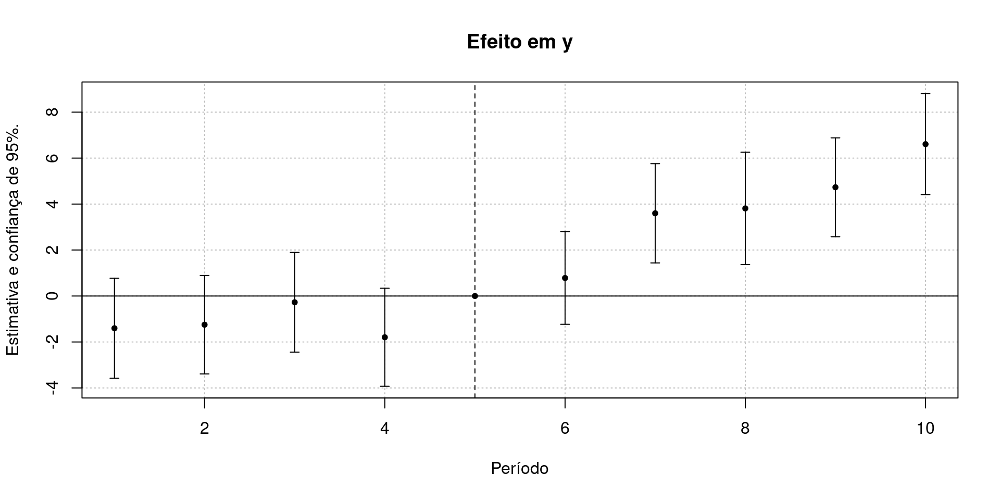📚 Leitura Recomendada
GERTLER, Paul J. et al. Avaliação de Impacto na Prática, 2018. - 2. ed. Banco Mundial. Capítulo 7 Diferenças em diferenças
ANGRIST, Joshua D.; PISCHKE, Jörn-Steffen. Mostly harmless econometrics: An empiricist’s companion. Princeton university press, 2009. Section 5.2 Differences-in-differences
CUNNINGHAM, Scott. Causal Inference: The Mixtape, New Haven: Yale University Press, 2021. URL: https://mixtape.scunning.com/. Chapter 9 Difference-in-differences
ATÉ A PRÓXIMA AULA!
[1]: Este slides foram baseados nas aulas de econometria da SciencesPo Department of Economics